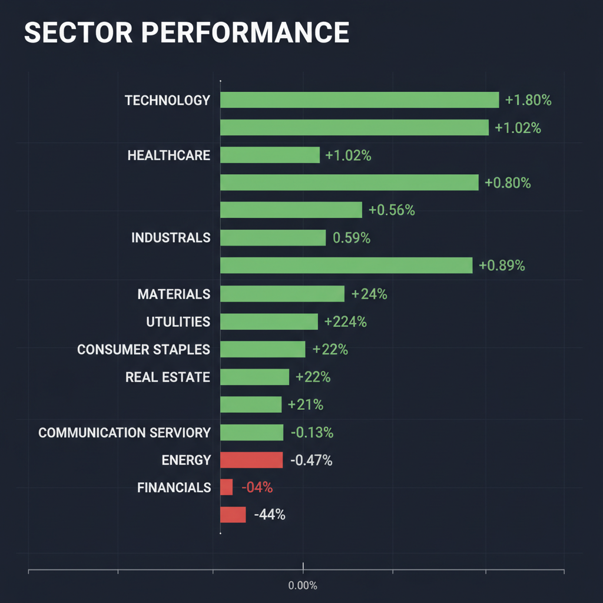
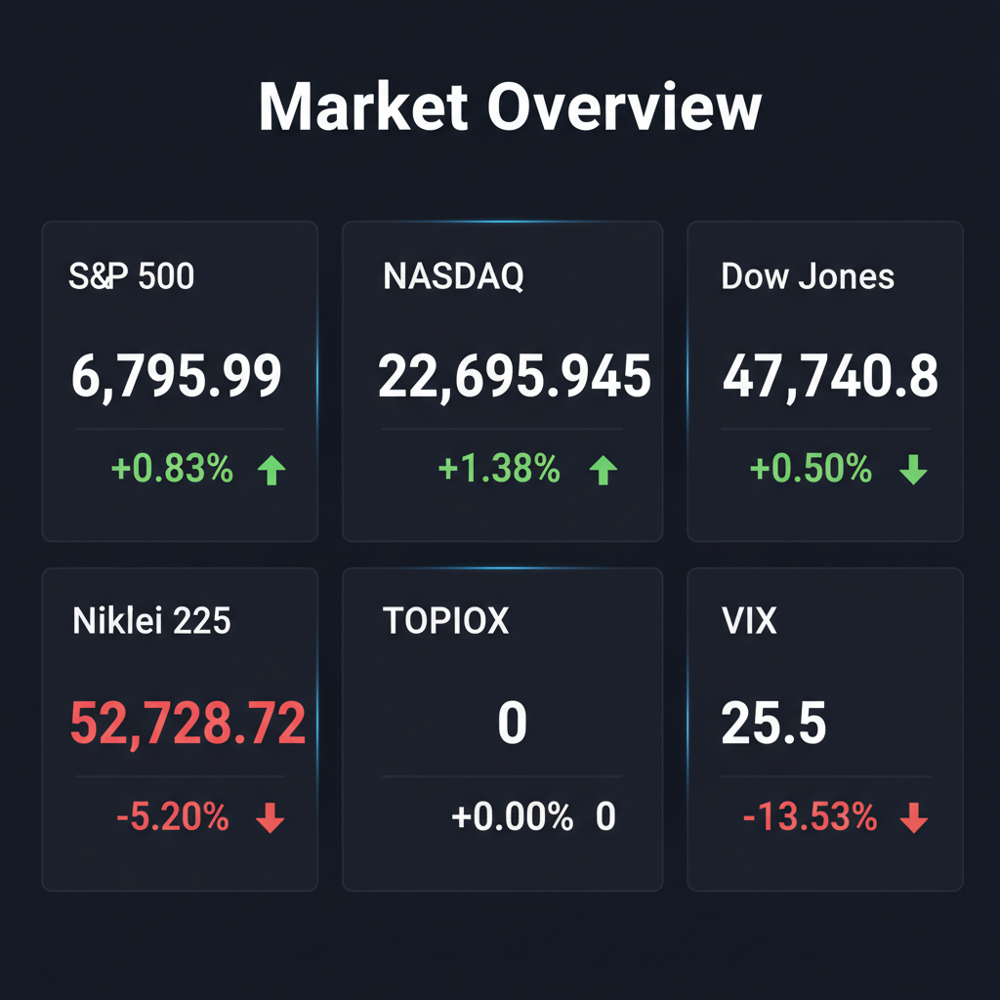

Daily Investment Report - 2026-03-10
Generated: 2026/3/10 8:12:50


投資チームミーティングでの各エージェントの詳細な分析と激しいディスカッションを踏まえ、現在の市場環境における最終的な投資レポートを提示いたします。
1. エグゼクティブサマリー
- 現在の市場は、米国ハイテク株の高値更新と日本株（日経平均-5.20%）の歴史的暴落が混在する、極端なデカップリングと高ボラティリティ（VIX 25.5）の環境下にあります。
- 日銀の政策正常化に伴う「円キャリートレードの巻き戻し」リスクや、米国におけるAI投資の「収益化（ROI）懸念」が浮上しており、流動性ショックに対する強い警戒が必要です。
- 投資戦略としては、割高な大型テック株や赤字の小型グロース株を避け、キャッシュ比率を高めつつ、実益を伴う「AI電力インフラ関連の中小型資本財」と「高金利耐性のある日本の優良地銀」に資金を集中させるバーベル戦略を推奨します。
2. 注目銘柄リスト
大型ハイテク株への一極集中を避け、強固な財務と確実な成長ストーリーを持つ中小型株を厳選しました。
強気（買い推奨）
- Powell Industries (POWL) [時価総額: 約35億ドル]: AIデータセンター増設に伴う電力・配電インフラ需要の直接的な恩恵を受けており、売上成長率+40%超かつ無借金経営ながらPER約20倍と極めて割安に放置されているため。
- 九州フィナンシャルグループ (7180) [時価総額: 約4,000億円]: TSMC熊本進出による莫大な設備投資・法人貸出需要を独占的に享受しつつ、日銀の追加利上げによる利ざや改善という強力な追い風を受けるPBR1倍割れの優良地銀であるため。
- マクニカホールディングス (3132) [時価総額: 約2,500億円]: エヌビディアの国内正規代理店としてAI需要を取り込み高ROEを誇りながら、PER8〜9倍と驚異的な安全マージンを確保しています（※日本株全体のパニック売りが落ち着き、底打ちを確認してからの打診買いを推奨）。
中立（様子見）
- 東洋炭素 (4010) [時価総額: 約1,000億円]: パワー半導体向け黒鉛で世界トップクラスのシェアを持ち、高収益かつPER14倍台と割安ですが、足元のEV需要減速懸念や日本市場のテクニカルな地合い悪化を考慮し、サポートラインの形成を待つべき局面です。
- QPS研究所 (5595) [時価総額: 約500億円]: 宇宙防衛インフラの国策銘柄として将来の市場規模（TAM）は巨大ですが、現在のVIX高止まり環境下では新興グロース株のボラティリティが極端に高まるため、リスク許容度の高い投資家限定の監視銘柄とします。
弱気（警戒）
- SoundHound AI (SOUN) & ASP Isotopes (ASPI) [時価総額: 約15億ドル / 約3億ドル]: 破壊的技術を持つものの恒常的な営業赤字であり、「金利の高止まり」環境下では資金調達枯渇リスクが極めて高く、機関投資家の投げ売りに巻き込まれる危険性が高いため。
- ターゲット (TGT) 等の低〜中所得者向け小売銘柄 [時価総額: 中〜大型]: インフレ粘着と高金利によるクレジットカード延滞率の上昇が直撃しており、今後の決算でEPS（1株当たり利益）の本格的な下方修正リスクが潜んでいるため。
3. セクター推奨ランキング
AIの物理的制約（莫大な電力不足）を解決する実需があり、景気動向に左右されにくく、現在のマクロ環境下で最も確実なキャッシュフロー改善が見込めるため。
GLP-1（肥満症治療薬）という固有のメガトレンドを持ちつつ、消費減速や高金利環境下でも業績が悪化しにくい強力なポートフォリオの安定剤となるため。
日銀の金利正常化（利上げ・国債買い入れ減額）による純金利収入の増加という明確な追い風があり、円高進行時でも輸出企業のような業績悪化リスクがないため。
長期的な成長ストーリーは不変ですが、過度なバリュエーション拡大とAI投資に対する「ROI（費用対効果）への厳しい選別」が始まっており、現在は利益確定を優先すべき局面に移行したため。
消費者の生活必需品以外への支出切り詰めと信用不安（延滞率上昇）の直撃を受けており、実体経済の悪化が最も早く業績に反映される最も脆弱なセクターであるため。
4. 今週の注目イベント
- 米国マクロ経済指標の発表（CPI、PCE、雇用統計など）: FRBの「年内利下げ回数」の軌道修正や、インフレの粘着性を確認するための最重要データ。
- 小売・一般消費財企業の決算発表: 消費の「二極化」の進行度合いと、高金利が家計に与えているダメージ（クレジットカード延滞等）の深さを実測。
- 日銀要人発言および為替市場の動向: 日銀による国債買い入れ減額の具体策や追加利上げのタイミングに関する示唆、および政府・日銀による円安牽制（為替介入警戒ラインの攻防）。
- VIX指数のテクニカル動向: VIXが25台から正常水準（20以下）へ低下し市場が落ち着きを取り戻すか、あるいは再急騰してパニック売り（セリングクライマックス）を誘発するかの確認。
5. リスク要因
- 円キャリートレードの暴力的な巻き戻し: 日銀のタカ派転換と為替介入への警戒から急激な円高が進行した場合、長年世界の市場を支えてきた安価な資金が逆流し、米国株を含むグローバルなリスク資産の強制売却（流動性ショック）が連鎖するリスク。
- AI投資の「ROI（投資利益率）ショック」: 巨大テック企業による莫大なAI設備投資が、エンドユーザーからの実際の収益（EPS）に見合っていないと市場が気づいた瞬間、半導体・ITセクター全体のバリュエーションが急収縮するリスク。
- 高金利の長期化（Higher for Longer）と信用収縮: FRBの利下げが後ずれすることで、低所得層の消費失速や、商業用不動産ローンエクスポージャーを抱える中堅地銀の潜在的損失が表面化するリスク。
- 日本株の「落ちるナイフ」状態の継続: 日経平均が-5.20%と主要なサポートラインを明確に下抜けており、テクニカルな底打ちが確認される前に安易な押し目買いを入れることで、さらなるストップロス（損切り）に巻き込まれるリスク。
6. アクションアイテム
- ポジションサイズの半減と現金比率の引き上げ: VIXが25を超える異常な高ボラティリティ環境下では、日々の価格変動ノイズで致命傷を負うため、保有株のポジションサイズを通常の半分以下に落とし、現金（キャッシュ）比率を50%以上に引き上げてください。
- 既存の米国株ポジションへの厳格なストップロス設定: AI関連やハイテク株など利益が乗っている銘柄は、直近の押し安値や20日・50日移動平均線の少し下にトレーリングストップ（逆指値）を再設定し、確実に利益を保護してください。
- 赤字の小型グロース株からの即時撤退: テンバガー候補であっても、現在の金利高止まり環境下で恒常的な赤字を垂れ流している銘柄（SOUN等）は直ちに売却し、強固なフリーキャッシュフローを生む資本財セクターへ資金を移動させてください。
- 日本株は「明確な底打ちシグナル」が出るまで完全静観: 日経平均の暴落に対して逆張り（押し目買い）は厳禁です。RSIの売られすぎ水準からの回復や、日足レベルでのダブルボトム、MACDのゴールデンクロス形成を確認するまで手を出さないでください。
- テールリスクへの保険（プットオプション）の購入: S&P 500（SPY）やNASDAQ（QQQ）に対するファー・アウト・オブ・ザ・マネー（現在の価格から遠く離れた行使価格）のプットオプションをポートフォリオの数%で購入し、万が一の相場全体のクラッシュ（ブラックスワン）に対するヘッジを直ちに実行してください。